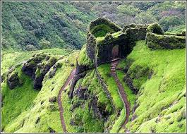
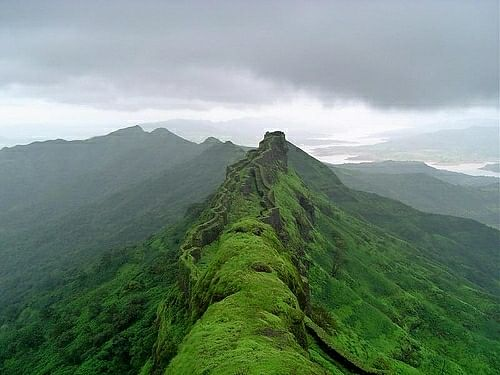
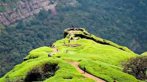

राजमाची किल्ला
Location : Click Here For Google Map
- माहिती
- राजमाची किल्ला, जो महाराष्ट्रातील पुणे जिल्ह्यात स्थित आहे, एक ऐतिहासिक आणि साहसी किल्ला आहे. किल्ल्याची उंची सुमारे ८२५ मीटर (२,७०० फूट) आहे. राजमाची किल्ला, खासकरून ट्रेकिंग आणि साहस प्रेमींसाठी एक प्रमुख ठिकाण आहे. किल्ल्याचे स्थान अतिशय सुंदर आहे, आणि त्याच्या शिखरावरून आसपासच्या लँडस्केपचे दृश्य खूपच सुंदर दिसते. किल्ल्याच्या दोन्ही मुख्य शिखरांवर मजबूत सुरक्षा भिंती आणि पाण्याचे टाकी आहेत. किल्ल्याचा इतिहास पुण्याच्या मुघल साम्राज्यापासून मराठा साम्राज्याच्या काळापर्यंत आहे. राजमाची किल्ला, निसर्ग प्रेमींना आणि ट्रेकिंगच्या अनुभवासाठी पिऊन जाऊ इच्छिणाऱ्यांना एक आदर्श ठिकाण आहे.
Explore the historical beauty


